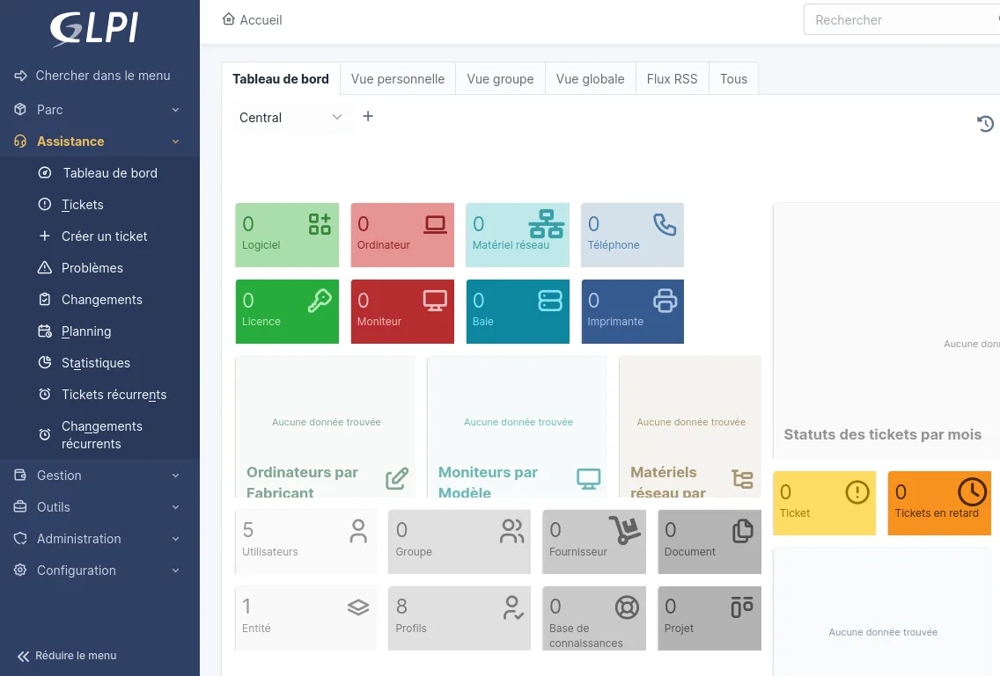
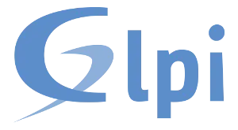

Au cours de l'année, nous avons travaillé sur quatre projets en réseau autour de GLPI, ce qui nous a permis de découvrir cet outil de gestion de parc informatique et de support. À travers ces projets, nous avons appris à l'installer, le configurer et l'utiliser dans un environnement réseau, tout en comprenant son rôle dans la gestion des incidents, des utilisateurs et du matériel.
GLPI est un outil qui sert à gérer le matériel informatique et les problèmes techniques dans une entreprise ou une organisation. Il permet de faire l'inventaire des ordinateurs, imprimantes et logiciels, mais aussi de gérer les demandes d'assistance grâce à un système de tickets. Lors de nos projets, nous avons découvert que GLPI aide à mieux organiser le travail des techniciens, à suivre les pannes et à assurer un bon fonctionnement du réseau informatique.

Un logiciel libre, pensé pour centraliser la gestion du parc informatique et du support technique au même endroit.
Vous retrouverez mes comptes rendus de mes différents projets GLPI ci-dessous, disponibles en téléchargement :